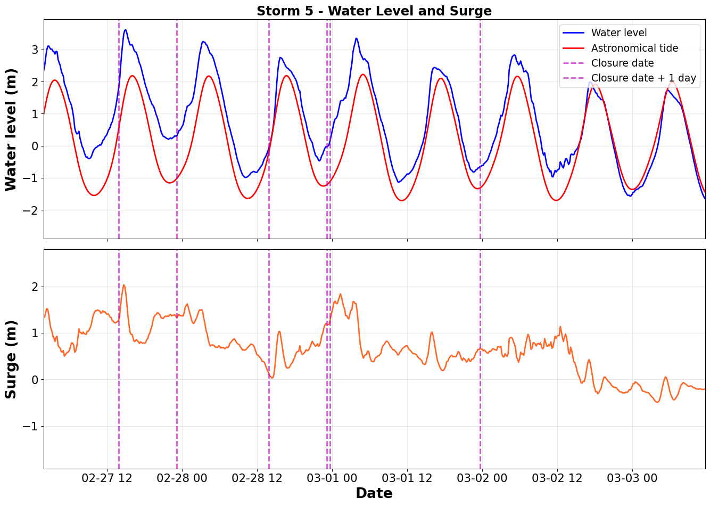
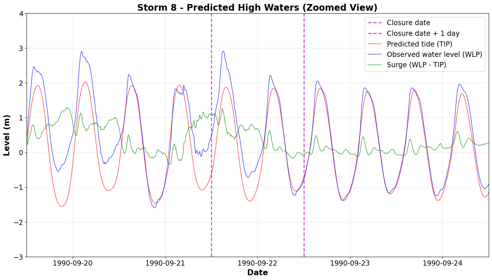
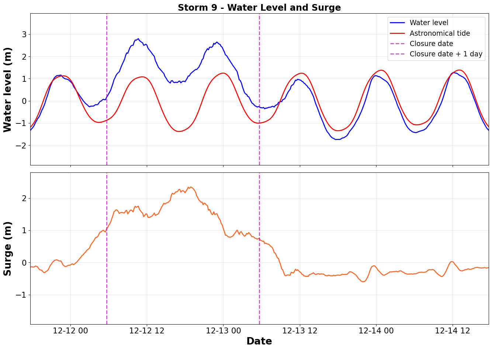
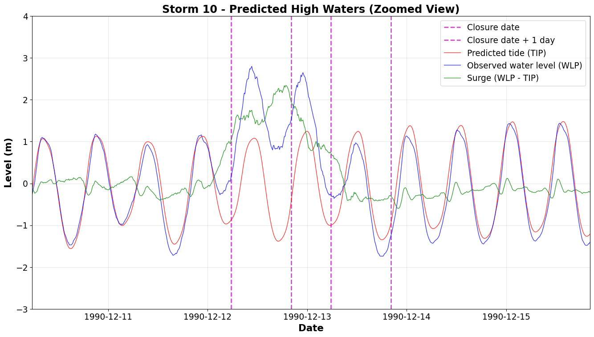
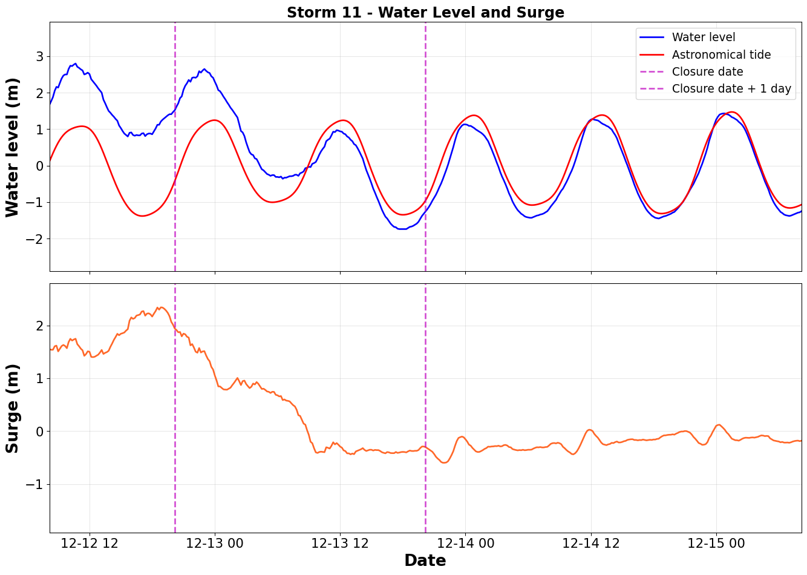
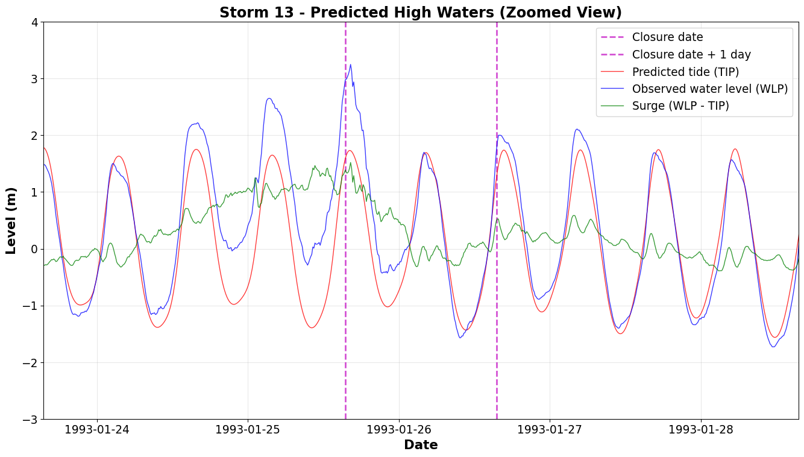
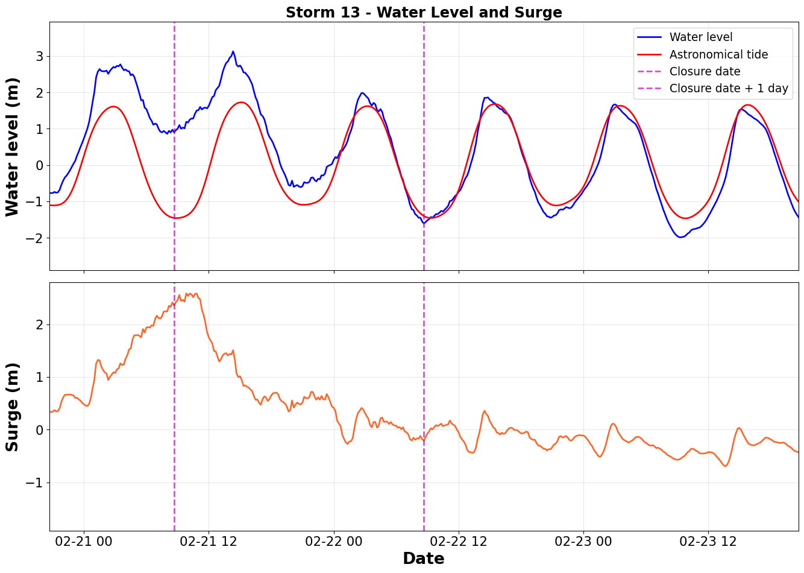
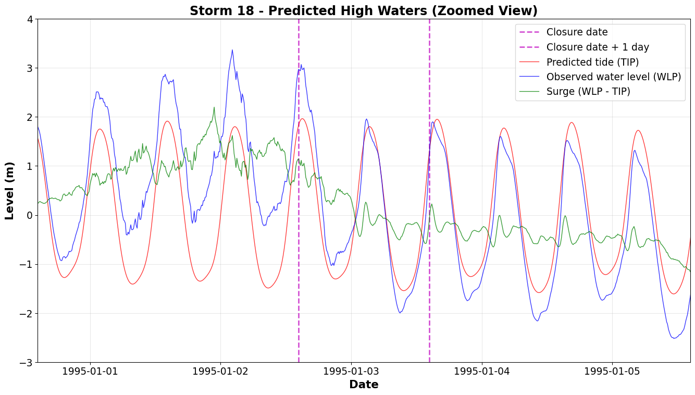
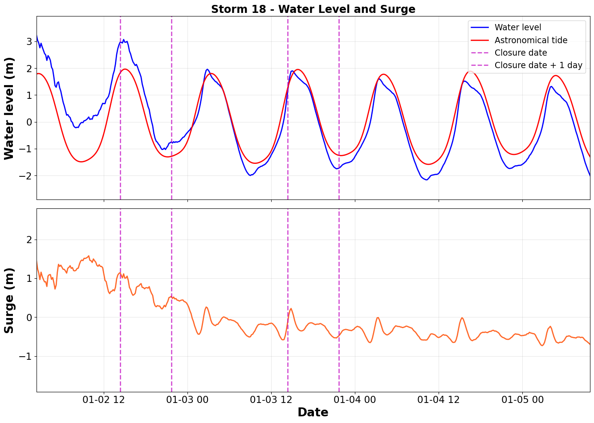
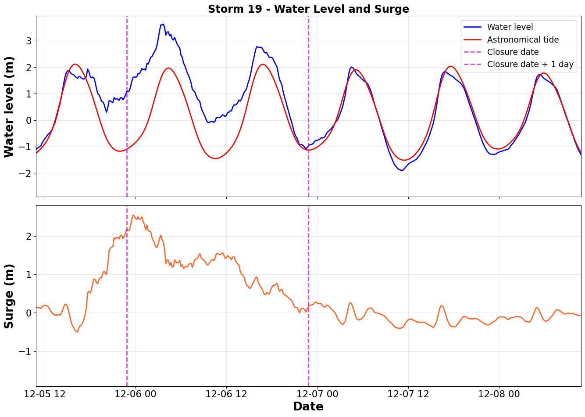

This document provides a detailed analysis of water levels and surge for Storm 5, Storm 7, Storm 8, Storm 9, Storm 10, Storm 11, Storm 12, Storm 13, Storm 18 (2007), and Storm 19 for the Eastern Scheldt, converting the MATLAB script master5.m to Python. The analysis:
Loads barrier closure dates and tide gauge data from previous analyses
Calculates surge component (WLP - TIP)
Creates detailed water level visualizations with closure date markers for each storm:
Zoomed water level and surge time series with closure markers (5-day window)
Detailed two-panel view showing water level vs. tide and surge separately
This provides a comprehensive view of the water level conditions that led to the barrier closures for Storms 5, 7, 8, 9, 10, 11, 12, 13, 18, and 19.
Setup
import numpy as npimport pandas as pdimport pickleimport matplotlib.pyplot as pltfrom datetime import datetime, timedeltaimport os# Configurationoutput_dir ='output'os.makedirs(output_dir, exist_ok=True)print(f"Analysis configuration:")print(f" Storms to process: Storm 5, Storm 7, Storm 8, Storm 9, Storm 10, Storm 11, Storm 12, Storm 13, Storm 18, and Storm 19")print(f" Output directory: {output_dir}")
# Load barrier closure data from master1print("Loading barrier closure data...")mast1_file = os.path.join(output_dir, 'mast1.pkl')ifnot os.path.exists(mast1_file):raiseFileNotFoundError(f"Required file {mast1_file} not found. ""Please run master1.qmd first to generate the required data file." )withopen(mast1_file, 'rb') as f: data1 = pickle.load(f) OCD = data1['OCD'] # Observed closure dates# Load tide gauge and tidal prediction data from master3print("Loading tide gauge and tidal prediction data...")mast3_file = os.path.join(output_dir, 'mast3.pkl')ifnot os.path.exists(mast3_file):raiseFileNotFoundError(f"Required file {mast3_file} not found. ""Please run master1.qmd, master2.qmd, and master3.qmd first to generate the required data files." )withopen(mast3_file, 'rb') as f: data3 = pickle.load(f) TSP = data3['TSP'] # Time series for predictions TIP = data3['TIP'] # Predicted tides WLP = data3['WLP'] # Observed water levels# Convert to numpy arrays if neededOCD = np.array(OCD)TSP = np.array(TSP)TIP = np.array(TIP)WLP = np.array(WLP)# Calculate surgeSUP = WLP - TIP# Recreate the storms table to get Event indices (same as in eastern_scheldt.qmd)storms_df = pd.DataFrame({'Closure Date': OCD,'Year': [d.year ifisinstance(d, datetime) elseNonefor d in OCD],'Month': [d.strftime('%B') ifisinstance(d, datetime) elseNonefor d in OCD],'YearMonth': [(d.year, d.month) ifisinstance(d, datetime) elseNonefor d in OCD]})# Create Event index that groups storms by year and monthunique_year_months = storms_df['YearMonth'].unique()year_month_to_index = {ym: idx +1for idx, ym inenumerate(sorted(unique_year_months))}storms_df['Event'] = storms_df['YearMonth'].map(year_month_to_index)print(f"\nData loaded:")print(f" Total closure dates: {len(OCD)} closures")print(f" Time series points: {len(TSP):,}")
Loading barrier closure data...
Loading tide gauge and tidal prediction data...
Data loaded:
Total closure dates: 31 closures
Time series points: 1,998,576
Storm Analysis
Storm 5
Storm 5 uses datasets with prefix “5_” in the 2_DATA directory. The storm number corresponds directly to the row index in the closure dates table.
# Storm 5 configurationstorm_num =5storm_event = storms_df.iloc[storm_num]['Event'] # Get Event index from storms tableprefix ='5_'print(f"\n{'='*60}")print(f"Processing Storm {storm_num} (Event {storm_event}, prefix: {prefix})")print(f"{'='*60}")# Get all closure indices for this storm event (there may be multiple closures per event)closure_indices = storms_df[storms_df['Event'] == storm_event].index.tolist()closure_dates = [OCD[i] for i in closure_indices]closure_dates_plus_one = [cd + timedelta(days=1) for cd in closure_dates]print(f" Number of closures for this event: {len(closure_dates)}")for i, cd inenumerate(closure_dates):print(f" Closure {i+1}: {cd} (index {closure_indices[i]})")fig, ax = plt.subplots(figsize=(14, 8))# Plot vertical lines for all closure datesfor i, closure_date inenumerate(closure_dates): ax.axvline(closure_date, color='m', linestyle='--', linewidth=2, alpha=0.7, label='Closure date'if i ==0else'') ax.axvline(closure_dates_plus_one[i], color='m', linestyle='--', linewidth=2, alpha=0.7, label='Closure date + 1 day'if i ==0else'')# Plot predicted tides (TIP)ax.plot(TSP, TIP, 'r', linewidth=1, label='Predicted tide (TIP)', alpha=0.8)# Plot observed water levels (WLP)ax.plot(TSP, WLP, 'b', linewidth=1, label='Observed water level (WLP)', alpha=0.8)# Plot difference (WLP - TIP) - surge componentax.plot(TSP, WLP - TIP, 'g', linewidth=1, label='Surge (WLP - TIP)', alpha=0.8)# Set zoom window: 2 days before first closure to 3 days after last closurexlim_start =min(closure_dates) - timedelta(days=2)xlim_end =max(closure_dates) + timedelta(days=3)# Formattingax.grid(True, alpha=0.3)ax.set_xlabel('Date', fontweight='bold', fontsize=16)ax.set_ylabel('Level (m)', fontweight='bold', fontsize=16)ax.set_title(f'Storm {storm_num} - Predicted High Waters (Zoomed View)', fontweight='bold', fontsize=18)ax.set_ylim(-3, 4)ax.set_xlim(xlim_start, xlim_end)ax.legend(fontsize=14, loc='best')ax.tick_params(labelsize=14)plt.tight_layout()plt.show()# Save figure with storm number in filenamefig_file = os.path.join(output_dir, f'high_waters_storm{storm_num}_predicted_high_waters_zoomed.png')plt.savefig(fig_file, dpi=150, bbox_inches='tight')print(f" Figure saved to {fig_file}")
============================================================
Processing Storm 5 (Event 4, prefix: 5_)
============================================================
Number of closures for this event: 3
Closure 1: 1990-02-27 23:10:00 (index 4)
Closure 2: 1990-02-27 13:50:00 (index 5)
Closure 3: 1990-02-28 23:40:00 (index 6)
Predicted high waters, observed water levels, and barrier closure (zoomed view) for Storm 5 - Eastern Scheldt
Figure saved to output/high_waters_storm5_predicted_high_waters_zoomed.png
<Figure size 672x480 with 0 Axes>
# Storm 5 configurationstorm_num =5storm_event = storms_df.iloc[storm_num]['Event'] # Get Event index from storms tableprefix ='5_'print(f"\n{'='*60}")print(f"Processing Storm {storm_num} (Event {storm_event}, prefix: {prefix})")print(f"{'='*60}")# Get all closure indices for this storm event (there may be multiple closures per event)closure_indices = storms_df[storms_df['Event'] == storm_event].index.tolist()closure_dates = [OCD[i] for i in closure_indices]closure_dates_plus_one = [cd + timedelta(days=1) for cd in closure_dates]print(f" Number of closures for this event: {len(closure_dates)}")for i, cd inenumerate(closure_dates):print(f" Closure {i+1}: {cd} (index {closure_indices[i]})")fig, (ax1, ax2) = plt.subplots(2, 1, figsize=(14, 10), sharex=True)# Top panel: Water level and predicted tideax1.plot(TSP, WLP, 'b', linewidth=2, label='Water level')ax1.plot(TSP, TIP, 'r', linewidth=2, label='Astronomical tide')# Plot vertical lines for all closure datesfor i, closure_date inenumerate(closure_dates): ax1.axvline(closure_date, color='m', linestyle='--', linewidth=2, alpha=0.7, label='Closure date'if i ==0else'') ax1.axvline(closure_dates_plus_one[i], color='m', linestyle='--', linewidth=2, alpha=0.7, label='Closure date + 1 day'if i ==0else'')ax1.set_ylabel('Water level (m)', fontweight='bold', fontsize=20)ax1.set_title(f'Storm {storm_num} - Water Level and Surge', fontweight='bold', fontsize=18)ax1.legend(fontsize=14)ax1.grid(True, alpha=0.3)ax1.tick_params(labelsize=16)ax1.set_xlim(min(closure_dates) - timedelta(hours=12), max(closure_dates) + timedelta(hours=60))# Bottom panel: Surgesurge_color = np.array([255, 103, 40]) /255ax2.plot(TSP, SUP, color=surge_color, linewidth=2)# Plot vertical lines for all closure datesfor closure_date, closure_date_plus_one inzip(closure_dates, closure_dates_plus_one): ax2.axvline(closure_date, color='m', linestyle='--', linewidth=2, alpha=0.7) ax2.axvline(closure_date_plus_one, color='m', linestyle='--', linewidth=2, alpha=0.7)ax2.set_xlabel('Date', fontweight='bold', fontsize=20)ax2.set_ylabel('Surge (m)', fontweight='bold', fontsize=20)ax2.grid(True, alpha=0.3)ax2.tick_params(labelsize=16)ax2.set_xlim(min(closure_dates) - timedelta(hours=12), max(closure_dates) + timedelta(hours=60))plt.tight_layout()plt.show()# Save figure with storm number in filenamefig_file = os.path.join(output_dir, f'high_waters_storm{storm_num}_water_level_surge.png')plt.savefig(fig_file, dpi=150, bbox_inches='tight')print(f" Figure saved to {fig_file}")
============================================================
Processing Storm 5 (Event 4, prefix: 5_)
============================================================
Number of closures for this event: 3
Closure 1: 1990-02-27 23:10:00 (index 4)
Closure 2: 1990-02-27 13:50:00 (index 5)
Closure 3: 1990-02-28 23:40:00 (index 6)

Water level and surge time series for Storm 5 closure event
Figure saved to output/high_waters_storm5_water_level_surge.png
<Figure size 672x480 with 0 Axes>
Storm 7
Storm 7 uses datasets with prefix “7_” in the 2_DATA directory. The storm number corresponds directly to the row index in the closure dates table.
# Storm 7 configurationstorm_num =7storm_event = storms_df.iloc[storm_num]['Event'] # Get Event index from storms tableprefix ='7_'print(f"\n{'='*60}")print(f"Processing Storm {storm_num} (Event {storm_event}, prefix: {prefix})")print(f"{'='*60}")# Get all closure indices for this storm event (there may be multiple closures per event)closure_indices = storms_df[storms_df['Event'] == storm_event].index.tolist()closure_dates = [OCD[i] for i in closure_indices]closure_dates_plus_one = [cd + timedelta(days=1) for cd in closure_dates]print(f" Number of closures for this event: {len(closure_dates)}")for i, cd inenumerate(closure_dates):print(f" Closure {i+1}: {cd} (index {closure_indices[i]})")fig, ax = plt.subplots(figsize=(14, 8))# Plot vertical lines for all closure datesfor i, closure_date inenumerate(closure_dates): ax.axvline(closure_date, color='m', linestyle='--', linewidth=2, alpha=0.7, label='Closure date'if i ==0else'') ax.axvline(closure_dates_plus_one[i], color='m', linestyle='--', linewidth=2, alpha=0.7, label='Closure date + 1 day'if i ==0else'')# Plot predicted tides (TIP)ax.plot(TSP, TIP, 'r', linewidth=1, label='Predicted tide (TIP)', alpha=0.8)# Plot observed water levels (WLP)ax.plot(TSP, WLP, 'b', linewidth=1, label='Observed water level (WLP)', alpha=0.8)# Plot difference (WLP - TIP) - surge componentax.plot(TSP, WLP - TIP, 'g', linewidth=1, label='Surge (WLP - TIP)', alpha=0.8)# Set zoom window: 2 days before first closure to 3 days after last closurexlim_start =min(closure_dates) - timedelta(days=2)xlim_end =max(closure_dates) + timedelta(days=3)# Formattingax.grid(True, alpha=0.3)ax.set_xlabel('Date', fontweight='bold', fontsize=16)ax.set_ylabel('Level (m)', fontweight='bold', fontsize=16)ax.set_title(f'Storm {storm_num} - Predicted High Waters (Zoomed View)', fontweight='bold', fontsize=18)ax.set_ylim(-3, 4)ax.set_xlim(xlim_start, xlim_end)ax.legend(fontsize=14, loc='best')ax.tick_params(labelsize=14)plt.tight_layout()plt.show()# Save figure with storm number in filenamefig_file = os.path.join(output_dir, f'high_waters_storm{storm_num}_predicted_high_waters_zoomed.png')plt.savefig(fig_file, dpi=150, bbox_inches='tight')print(f" Figure saved to {fig_file}")
============================================================
Processing Storm 7 (Event 5, prefix: 7_)
============================================================
Number of closures for this event: 1
Closure 1: 1990-03-01 00:10:00 (index 7)
Predicted high waters, observed water levels, and barrier closure (zoomed view) for Storm 7 - Eastern Scheldt
Figure saved to output/high_waters_storm7_predicted_high_waters_zoomed.png
<Figure size 672x480 with 0 Axes>
# Storm 7 configurationstorm_num =7storm_event = storms_df.iloc[storm_num]['Event'] # Get Event index from storms tableprefix ='7_'print(f"\n{'='*60}")print(f"Processing Storm {storm_num} (Event {storm_event}, prefix: {prefix})")print(f"{'='*60}")# Get all closure indices for this storm event (there may be multiple closures per event)closure_indices = storms_df[storms_df['Event'] == storm_event].index.tolist()closure_dates = [OCD[i] for i in closure_indices]closure_dates_plus_one = [cd + timedelta(days=1) for cd in closure_dates]print(f" Number of closures for this event: {len(closure_dates)}")for i, cd inenumerate(closure_dates):print(f" Closure {i+1}: {cd} (index {closure_indices[i]})")fig, (ax1, ax2) = plt.subplots(2, 1, figsize=(14, 10), sharex=True)# Top panel: Water level and predicted tideax1.plot(TSP, WLP, 'b', linewidth=2, label='Water level')ax1.plot(TSP, TIP, 'r', linewidth=2, label='Astronomical tide')# Plot vertical lines for all closure datesfor i, closure_date inenumerate(closure_dates): ax1.axvline(closure_date, color='m', linestyle='--', linewidth=2, alpha=0.7, label='Closure date'if i ==0else'') ax1.axvline(closure_dates_plus_one[i], color='m', linestyle='--', linewidth=2, alpha=0.7, label='Closure date + 1 day'if i ==0else'')ax1.set_ylabel('Water level (m)', fontweight='bold', fontsize=20)ax1.set_title(f'Storm {storm_num} - Water Level and Surge', fontweight='bold', fontsize=18)ax1.legend(fontsize=14)ax1.grid(True, alpha=0.3)ax1.tick_params(labelsize=16)ax1.set_xlim(min(closure_dates) - timedelta(hours=12), max(closure_dates) + timedelta(hours=60))# Bottom panel: Surgesurge_color = np.array([255, 103, 40]) /255ax2.plot(TSP, SUP, color=surge_color, linewidth=2)# Plot vertical lines for all closure datesfor closure_date, closure_date_plus_one inzip(closure_dates, closure_dates_plus_one): ax2.axvline(closure_date, color='m', linestyle='--', linewidth=2, alpha=0.7) ax2.axvline(closure_date_plus_one, color='m', linestyle='--', linewidth=2, alpha=0.7)ax2.set_xlabel('Date', fontweight='bold', fontsize=20)ax2.set_ylabel('Surge (m)', fontweight='bold', fontsize=20)ax2.grid(True, alpha=0.3)ax2.tick_params(labelsize=16)ax2.set_xlim(min(closure_dates) - timedelta(hours=12), max(closure_dates) + timedelta(hours=60))plt.tight_layout()plt.show()# Save figure with storm number in filenamefig_file = os.path.join(output_dir, f'high_waters_storm{storm_num}_water_level_surge.png')plt.savefig(fig_file, dpi=150, bbox_inches='tight')print(f" Figure saved to {fig_file}")
============================================================
Processing Storm 7 (Event 5, prefix: 7_)
============================================================
Number of closures for this event: 1
Closure 1: 1990-03-01 00:10:00 (index 7)
Water level and surge time series for Storm 7 closure event
Figure saved to output/high_waters_storm7_water_level_surge.png
<Figure size 672x480 with 0 Axes>
Storm 8
Storm 8 uses datasets with prefix “8_” in the 2_DATA directory. The storm number corresponds directly to the row index in the closure dates table.
# Storm 8 configurationstorm_num =8storm_event = storms_df.iloc[storm_num]['Event'] # Get Event index from storms tableprefix ='8_'print(f"\n{'='*60}")print(f"Processing Storm {storm_num} (Event {storm_event}, prefix: {prefix})")print(f"{'='*60}")# Get all closure indices for this storm event (there may be multiple closures per event)closure_indices = storms_df[storms_df['Event'] == storm_event].index.tolist()closure_dates = [OCD[i] for i in closure_indices]closure_dates_plus_one = [cd + timedelta(days=1) for cd in closure_dates]print(f" Number of closures for this event: {len(closure_dates)}")for i, cd inenumerate(closure_dates):print(f" Closure {i+1}: {cd} (index {closure_indices[i]})")fig, ax = plt.subplots(figsize=(14, 8))# Plot vertical lines for all closure datesfor i, closure_date inenumerate(closure_dates): ax.axvline(closure_date, color='m', linestyle='--', linewidth=2, alpha=0.7, label='Closure date'if i ==0else'') ax.axvline(closure_dates_plus_one[i], color='m', linestyle='--', linewidth=2, alpha=0.7, label='Closure date + 1 day'if i ==0else'')# Plot predicted tides (TIP)ax.plot(TSP, TIP, 'r', linewidth=1, label='Predicted tide (TIP)', alpha=0.8)# Plot observed water levels (WLP)ax.plot(TSP, WLP, 'b', linewidth=1, label='Observed water level (WLP)', alpha=0.8)# Plot difference (WLP - TIP) - surge componentax.plot(TSP, WLP - TIP, 'g', linewidth=1, label='Surge (WLP - TIP)', alpha=0.8)# Set zoom window: 2 days before first closure to 3 days after last closurexlim_start =min(closure_dates) - timedelta(days=2)xlim_end =max(closure_dates) + timedelta(days=3)# Formattingax.grid(True, alpha=0.3)ax.set_xlabel('Date', fontweight='bold', fontsize=16)ax.set_ylabel('Level (m)', fontweight='bold', fontsize=16)ax.set_title(f'Storm {storm_num} - Predicted High Waters (Zoomed View)', fontweight='bold', fontsize=18)ax.set_ylim(-3, 4)ax.set_xlim(xlim_start, xlim_end)ax.legend(fontsize=14, loc='best')ax.tick_params(labelsize=14)plt.tight_layout()plt.show()# Save figure with storm number in filenamefig_file = os.path.join(output_dir, f'high_waters_storm{storm_num}_predicted_high_waters_zoomed.png')plt.savefig(fig_file, dpi=150, bbox_inches='tight')print(f" Figure saved to {fig_file}")
============================================================
Processing Storm 8 (Event 6, prefix: 8_)
============================================================
Number of closures for this event: 1
Closure 1: 1990-09-21 12:00:00 (index 8)

Predicted high waters, observed water levels, and barrier closure (zoomed view) for Storm 8 - Eastern Scheldt
Figure saved to output/high_waters_storm8_predicted_high_waters_zoomed.png
<Figure size 672x480 with 0 Axes>
# Storm 8 configurationstorm_num =8storm_event = storms_df.iloc[storm_num]['Event'] # Get Event index from storms tableprefix ='8_'print(f"\n{'='*60}")print(f"Processing Storm {storm_num} (Event {storm_event}, prefix: {prefix})")print(f"{'='*60}")# Get all closure indices for this storm event (there may be multiple closures per event)closure_indices = storms_df[storms_df['Event'] == storm_event].index.tolist()closure_dates = [OCD[i] for i in closure_indices]closure_dates_plus_one = [cd + timedelta(days=1) for cd in closure_dates]print(f" Number of closures for this event: {len(closure_dates)}")for i, cd inenumerate(closure_dates):print(f" Closure {i+1}: {cd} (index {closure_indices[i]})")fig, (ax1, ax2) = plt.subplots(2, 1, figsize=(14, 10), sharex=True)# Top panel: Water level and predicted tideax1.plot(TSP, WLP, 'b', linewidth=2, label='Water level')ax1.plot(TSP, TIP, 'r', linewidth=2, label='Astronomical tide')# Plot vertical lines for all closure datesfor i, closure_date inenumerate(closure_dates): ax1.axvline(closure_date, color='m', linestyle='--', linewidth=2, alpha=0.7, label='Closure date'if i ==0else'') ax1.axvline(closure_dates_plus_one[i], color='m', linestyle='--', linewidth=2, alpha=0.7, label='Closure date + 1 day'if i ==0else'')ax1.set_ylabel('Water level (m)', fontweight='bold', fontsize=20)ax1.set_title(f'Storm {storm_num} - Water Level and Surge', fontweight='bold', fontsize=18)ax1.legend(fontsize=14)ax1.grid(True, alpha=0.3)ax1.tick_params(labelsize=16)ax1.set_xlim(min(closure_dates) - timedelta(hours=12), max(closure_dates) + timedelta(hours=60))# Bottom panel: Surgesurge_color = np.array([255, 103, 40]) /255ax2.plot(TSP, SUP, color=surge_color, linewidth=2)# Plot vertical lines for all closure datesfor closure_date, closure_date_plus_one inzip(closure_dates, closure_dates_plus_one): ax2.axvline(closure_date, color='m', linestyle='--', linewidth=2, alpha=0.7) ax2.axvline(closure_date_plus_one, color='m', linestyle='--', linewidth=2, alpha=0.7)ax2.set_xlabel('Date', fontweight='bold', fontsize=20)ax2.set_ylabel('Surge (m)', fontweight='bold', fontsize=20)ax2.grid(True, alpha=0.3)ax2.tick_params(labelsize=16)ax2.set_xlim(min(closure_dates) - timedelta(hours=12), max(closure_dates) + timedelta(hours=60))plt.tight_layout()plt.show()# Save figure with storm number in filenamefig_file = os.path.join(output_dir, f'high_waters_storm{storm_num}_water_level_surge.png')plt.savefig(fig_file, dpi=150, bbox_inches='tight')print(f" Figure saved to {fig_file}")
============================================================
Processing Storm 8 (Event 6, prefix: 8_)
============================================================
Number of closures for this event: 1
Closure 1: 1990-09-21 12:00:00 (index 8)
Water level and surge time series for Storm 8 closure event
Figure saved to output/high_waters_storm8_water_level_surge.png
<Figure size 672x480 with 0 Axes>
Storm 9
Storm 9 uses datasets with prefix “9_” in the 2_DATA directory. The storm number corresponds directly to the row index in the closure dates table.
# Storm 9 configurationstorm_num =9storm_event = storms_df.iloc[storm_num]['Event'] # Get Event index from storms tableprefix ='9_'print(f"\n{'='*60}")print(f"Processing Storm {storm_num} (Event {storm_event}, prefix: {prefix})")print(f"{'='*60}")# Get all closure indices for this storm event (there may be multiple closures per event)closure_indices = storms_df[storms_df['Event'] == storm_event].index.tolist()closure_dates = [OCD[i] for i in closure_indices]closure_dates_plus_one = [cd + timedelta(days=1) for cd in closure_dates]print(f" Number of closures for this event: {len(closure_dates)}")for i, cd inenumerate(closure_dates):print(f" Closure {i+1}: {cd} (index {closure_indices[i]})")fig, ax = plt.subplots(figsize=(14, 8))# Plot vertical lines for all closure datesfor i, closure_date inenumerate(closure_dates): ax.axvline(closure_date, color='m', linestyle='--', linewidth=2, alpha=0.7, label='Closure date'if i ==0else'') ax.axvline(closure_dates_plus_one[i], color='m', linestyle='--', linewidth=2, alpha=0.7, label='Closure date + 1 day'if i ==0else'')# Plot predicted tides (TIP)ax.plot(TSP, TIP, 'r', linewidth=1, label='Predicted tide (TIP)', alpha=0.8)# Plot observed water levels (WLP)ax.plot(TSP, WLP, 'b', linewidth=1, label='Observed water level (WLP)', alpha=0.8)# Plot difference (WLP - TIP) - surge componentax.plot(TSP, WLP - TIP, 'g', linewidth=1, label='Surge (WLP - TIP)', alpha=0.8)# Set zoom window: 2 days before first closure to 3 days after last closurexlim_start =min(closure_dates) - timedelta(days=2)xlim_end =max(closure_dates) + timedelta(days=3)# Formattingax.grid(True, alpha=0.3)ax.set_xlabel('Date', fontweight='bold', fontsize=16)ax.set_ylabel('Level (m)', fontweight='bold', fontsize=16)ax.set_title(f'Storm {storm_num} - Predicted High Waters (Zoomed View)', fontweight='bold', fontsize=18)ax.set_ylim(-3, 4)ax.set_xlim(xlim_start, xlim_end)ax.legend(fontsize=14, loc='best')ax.tick_params(labelsize=14)plt.tight_layout()plt.show()# Save figure with storm number in filenamefig_file = os.path.join(output_dir, f'high_waters_storm{storm_num}_predicted_high_waters_zoomed.png')plt.savefig(fig_file, dpi=150, bbox_inches='tight')print(f" Figure saved to {fig_file}")
============================================================
Processing Storm 9 (Event 7, prefix: 9_)
============================================================
Number of closures for this event: 2
Closure 1: 1990-12-12 05:40:00 (index 9)
Closure 2: 1990-12-12 20:10:00 (index 10)
Predicted high waters, observed water levels, and barrier closure (zoomed view) for Storm 9 - Eastern Scheldt
Figure saved to output/high_waters_storm9_predicted_high_waters_zoomed.png
<Figure size 672x480 with 0 Axes>
# Storm 9 configurationstorm_num =9storm_event = storms_df.iloc[storm_num]['Event'] # Get Event index from storms tableprefix ='9_'print(f"\n{'='*60}")print(f"Processing Storm {storm_num} (Event {storm_event}, prefix: {prefix})")print(f"{'='*60}")# Get all closure indices for this storm event (there may be multiple closures per event)closure_indices = storms_df[storms_df['Event'] == storm_event].index.tolist()closure_dates = [OCD[i] for i in closure_indices]closure_dates_plus_one = [cd + timedelta(days=1) for cd in closure_dates]print(f" Number of closures for this event: {len(closure_dates)}")for i, cd inenumerate(closure_dates):print(f" Closure {i+1}: {cd} (index {closure_indices[i]})")fig, (ax1, ax2) = plt.subplots(2, 1, figsize=(14, 10), sharex=True)# Top panel: Water level and predicted tideax1.plot(TSP, WLP, 'b', linewidth=2, label='Water level')ax1.plot(TSP, TIP, 'r', linewidth=2, label='Astronomical tide')# Plot vertical lines for all closure datesfor i, closure_date inenumerate(closure_dates): ax1.axvline(closure_date, color='m', linestyle='--', linewidth=2, alpha=0.7, label='Closure date'if i ==0else'') ax1.axvline(closure_dates_plus_one[i], color='m', linestyle='--', linewidth=2, alpha=0.7, label='Closure date + 1 day'if i ==0else'')ax1.set_ylabel('Water level (m)', fontweight='bold', fontsize=20)ax1.set_title(f'Storm {storm_num} - Water Level and Surge', fontweight='bold', fontsize=18)ax1.legend(fontsize=14)ax1.grid(True, alpha=0.3)ax1.tick_params(labelsize=16)ax1.set_xlim(min(closure_dates) - timedelta(hours=12), max(closure_dates) + timedelta(hours=60))# Bottom panel: Surgesurge_color = np.array([255, 103, 40]) /255ax2.plot(TSP, SUP, color=surge_color, linewidth=2)# Plot vertical lines for all closure datesfor closure_date, closure_date_plus_one inzip(closure_dates, closure_dates_plus_one): ax2.axvline(closure_date, color='m', linestyle='--', linewidth=2, alpha=0.7) ax2.axvline(closure_date_plus_one, color='m', linestyle='--', linewidth=2, alpha=0.7)ax2.set_xlabel('Date', fontweight='bold', fontsize=20)ax2.set_ylabel('Surge (m)', fontweight='bold', fontsize=20)ax2.grid(True, alpha=0.3)ax2.tick_params(labelsize=16)ax2.set_xlim(min(closure_dates) - timedelta(hours=12), max(closure_dates) + timedelta(hours=60))plt.tight_layout()plt.show()# Save figure with storm number in filenamefig_file = os.path.join(output_dir, f'high_waters_storm{storm_num}_water_level_surge.png')plt.savefig(fig_file, dpi=150, bbox_inches='tight')print(f" Figure saved to {fig_file}")
============================================================
Processing Storm 9 (Event 7, prefix: 9_)
============================================================
Number of closures for this event: 2
Closure 1: 1990-12-12 05:40:00 (index 9)
Closure 2: 1990-12-12 20:10:00 (index 10)

Water level and surge time series for Storm 9 closure event
Figure saved to output/high_waters_storm9_water_level_surge.png
<Figure size 672x480 with 0 Axes>
Storm 10
Storm 10 uses datasets with prefix “10_” in the 2_DATA directory. The storm number corresponds directly to the row index in the closure dates table.
# Storm 10 configurationstorm_num =10storm_event = storms_df.iloc[storm_num]['Event'] # Get Event index from storms tableprefix ='10_'print(f"\n{'='*60}")print(f"Processing Storm {storm_num} (Event {storm_event}, prefix: {prefix})")print(f"{'='*60}")# Get all closure indices for this storm event (there may be multiple closures per event)closure_indices = storms_df[storms_df['Event'] == storm_event].index.tolist()closure_dates = [OCD[i] for i in closure_indices]closure_dates_plus_one = [cd + timedelta(days=1) for cd in closure_dates]print(f" Number of closures for this event: {len(closure_dates)}")for i, cd inenumerate(closure_dates):print(f" Closure {i+1}: {cd} (index {closure_indices[i]})")fig, ax = plt.subplots(figsize=(14, 8))# Plot vertical lines for all closure datesfor i, closure_date inenumerate(closure_dates): ax.axvline(closure_date, color='m', linestyle='--', linewidth=2, alpha=0.7, label='Closure date'if i ==0else'') ax.axvline(closure_dates_plus_one[i], color='m', linestyle='--', linewidth=2, alpha=0.7, label='Closure date + 1 day'if i ==0else'')# Plot predicted tides (TIP)ax.plot(TSP, TIP, 'r', linewidth=1, label='Predicted tide (TIP)', alpha=0.8)# Plot observed water levels (WLP)ax.plot(TSP, WLP, 'b', linewidth=1, label='Observed water level (WLP)', alpha=0.8)# Plot difference (WLP - TIP) - surge componentax.plot(TSP, WLP - TIP, 'g', linewidth=1, label='Surge (WLP - TIP)', alpha=0.8)# Set zoom window: 2 days before first closure to 3 days after last closurexlim_start =min(closure_dates) - timedelta(days=2)xlim_end =max(closure_dates) + timedelta(days=3)# Formattingax.grid(True, alpha=0.3)ax.set_xlabel('Date', fontweight='bold', fontsize=16)ax.set_ylabel('Level (m)', fontweight='bold', fontsize=16)ax.set_title(f'Storm {storm_num} - Predicted High Waters (Zoomed View)', fontweight='bold', fontsize=18)ax.set_ylim(-3, 4)ax.set_xlim(xlim_start, xlim_end)ax.legend(fontsize=14, loc='best')ax.tick_params(labelsize=14)plt.tight_layout()plt.show()# Save figure with storm number in filenamefig_file = os.path.join(output_dir, f'high_waters_storm{storm_num}_predicted_high_waters_zoomed.png')plt.savefig(fig_file, dpi=150, bbox_inches='tight')print(f" Figure saved to {fig_file}")
============================================================
Processing Storm 10 (Event 7, prefix: 10_)
============================================================
Number of closures for this event: 2
Closure 1: 1990-12-12 05:40:00 (index 9)
Closure 2: 1990-12-12 20:10:00 (index 10)

Predicted high waters, observed water levels, and barrier closure (zoomed view) for Storm 10 - Eastern Scheldt
Figure saved to output/high_waters_storm10_predicted_high_waters_zoomed.png
<Figure size 672x480 with 0 Axes>
# Storm 10 configurationstorm_num =10storm_event = storms_df.iloc[storm_num]['Event'] # Get Event index from storms tableprefix ='10_'print(f"\n{'='*60}")print(f"Processing Storm {storm_num} (Event {storm_event}, prefix: {prefix})")print(f"{'='*60}")# Get all closure indices for this storm event (there may be multiple closures per event)closure_indices = storms_df[storms_df['Event'] == storm_event].index.tolist()closure_dates = [OCD[i] for i in closure_indices]closure_dates_plus_one = [cd + timedelta(days=1) for cd in closure_dates]print(f" Number of closures for this event: {len(closure_dates)}")for i, cd inenumerate(closure_dates):print(f" Closure {i+1}: {cd} (index {closure_indices[i]})")fig, (ax1, ax2) = plt.subplots(2, 1, figsize=(14, 10), sharex=True)# Top panel: Water level and predicted tideax1.plot(TSP, WLP, 'b', linewidth=2, label='Water level')ax1.plot(TSP, TIP, 'r', linewidth=2, label='Astronomical tide')# Plot vertical lines for all closure datesfor i, closure_date inenumerate(closure_dates): ax1.axvline(closure_date, color='m', linestyle='--', linewidth=2, alpha=0.7, label='Closure date'if i ==0else'') ax1.axvline(closure_dates_plus_one[i], color='m', linestyle='--', linewidth=2, alpha=0.7, label='Closure date + 1 day'if i ==0else'')ax1.set_ylabel('Water level (m)', fontweight='bold', fontsize=20)ax1.set_title(f'Storm {storm_num} - Water Level and Surge', fontweight='bold', fontsize=18)ax1.legend(fontsize=14)ax1.grid(True, alpha=0.3)ax1.tick_params(labelsize=16)ax1.set_xlim(min(closure_dates) - timedelta(hours=12), max(closure_dates) + timedelta(hours=60))# Bottom panel: Surgesurge_color = np.array([255, 103, 40]) /255ax2.plot(TSP, SUP, color=surge_color, linewidth=2)# Plot vertical lines for all closure datesfor closure_date, closure_date_plus_one inzip(closure_dates, closure_dates_plus_one): ax2.axvline(closure_date, color='m', linestyle='--', linewidth=2, alpha=0.7) ax2.axvline(closure_date_plus_one, color='m', linestyle='--', linewidth=2, alpha=0.7)ax2.set_xlabel('Date', fontweight='bold', fontsize=20)ax2.set_ylabel('Surge (m)', fontweight='bold', fontsize=20)ax2.grid(True, alpha=0.3)ax2.tick_params(labelsize=16)ax2.set_xlim(min(closure_dates) - timedelta(hours=12), max(closure_dates) + timedelta(hours=60))plt.tight_layout()plt.show()# Save figure with storm number in filenamefig_file = os.path.join(output_dir, f'high_waters_storm{storm_num}_water_level_surge.png')plt.savefig(fig_file, dpi=150, bbox_inches='tight')print(f" Figure saved to {fig_file}")
============================================================
Processing Storm 10 (Event 7, prefix: 10_)
============================================================
Number of closures for this event: 2
Closure 1: 1990-12-12 05:40:00 (index 9)
Closure 2: 1990-12-12 20:10:00 (index 10)
Water level and surge time series for Storm 10 closure event
Figure saved to output/high_waters_storm10_water_level_surge.png
<Figure size 672x480 with 0 Axes>
Storm 11
Storm 11 uses datasets with prefix “11_” in the 2_DATA directory. The storm number corresponds directly to the row index in the closure dates table.
# Storm 11 configurationstorm_num =11storm_event = storms_df.iloc[storm_num]['Event'] # Get Event index from storms tableprefix ='11_'print(f"\n{'='*60}")print(f"Processing Storm {storm_num} (Event {storm_event}, prefix: {prefix})")print(f"{'='*60}")# Get all closure indices for this storm event (there may be multiple closures per event)closure_indices = storms_df[storms_df['Event'] == storm_event].index.tolist()closure_dates = [OCD[i] for i in closure_indices]closure_dates_plus_one = [cd + timedelta(days=1) for cd in closure_dates]print(f" Number of closures for this event: {len(closure_dates)}")for i, cd inenumerate(closure_dates):print(f" Closure {i+1}: {cd} (index {closure_indices[i]})")fig, ax = plt.subplots(figsize=(14, 8))# Plot vertical lines for all closure datesfor i, closure_date inenumerate(closure_dates): ax.axvline(closure_date, color='m', linestyle='--', linewidth=2, alpha=0.7, label='Closure date'if i ==0else'') ax.axvline(closure_dates_plus_one[i], color='m', linestyle='--', linewidth=2, alpha=0.7, label='Closure date + 1 day'if i ==0else'')# Plot predicted tides (TIP)ax.plot(TSP, TIP, 'r', linewidth=1, label='Predicted tide (TIP)', alpha=0.8)# Plot observed water levels (WLP)ax.plot(TSP, WLP, 'b', linewidth=1, label='Observed water level (WLP)', alpha=0.8)# Plot difference (WLP - TIP) - surge componentax.plot(TSP, WLP - TIP, 'g', linewidth=1, label='Surge (WLP - TIP)', alpha=0.8)# Set zoom window: 2 days before first closure to 3 days after last closurexlim_start =min(closure_dates) - timedelta(days=2)xlim_end =max(closure_dates) + timedelta(days=3)# Formattingax.grid(True, alpha=0.3)ax.set_xlabel('Date', fontweight='bold', fontsize=16)ax.set_ylabel('Level (m)', fontweight='bold', fontsize=16)ax.set_title(f'Storm {storm_num} - Predicted High Waters (Zoomed View)', fontweight='bold', fontsize=18)ax.set_ylim(-3, 4)ax.set_xlim(xlim_start, xlim_end)ax.legend(fontsize=14, loc='best')ax.tick_params(labelsize=14)plt.tight_layout()plt.show()# Save figure with storm number in filenamefig_file = os.path.join(output_dir, f'high_waters_storm{storm_num}_predicted_high_waters_zoomed.png')plt.savefig(fig_file, dpi=150, bbox_inches='tight')print(f" Figure saved to {fig_file}")
============================================================
Processing Storm 11 (Event 8, prefix: 11_)
============================================================
Number of closures for this event: 1
Closure 1: 1992-11-11 13:40:00 (index 11)
Predicted high waters, observed water levels, and barrier closure (zoomed view) for Storm 11 - Eastern Scheldt
Figure saved to output/high_waters_storm11_predicted_high_waters_zoomed.png
<Figure size 672x480 with 0 Axes>
# Storm 11 configurationstorm_num =11storm_event = storms_df.iloc[storm_num]['Event'] # Get Event index from storms tableprefix ='11_'print(f"\n{'='*60}")print(f"Processing Storm {storm_num} (Event {storm_event}, prefix: {prefix})")print(f"{'='*60}")# Get all closure indices for this storm event (there may be multiple closures per event)closure_indices = storms_df[storms_df['Event'] == storm_event].index.tolist()closure_dates = [OCD[i] for i in closure_indices]closure_dates_plus_one = [cd + timedelta(days=1) for cd in closure_dates]print(f" Number of closures for this event: {len(closure_dates)}")for i, cd inenumerate(closure_dates):print(f" Closure {i+1}: {cd} (index {closure_indices[i]})")fig, (ax1, ax2) = plt.subplots(2, 1, figsize=(14, 10), sharex=True)# Top panel: Water level and predicted tideax1.plot(TSP, WLP, 'b', linewidth=2, label='Water level')ax1.plot(TSP, TIP, 'r', linewidth=2, label='Astronomical tide')# Plot vertical lines for all closure datesfor i, closure_date inenumerate(closure_dates): ax1.axvline(closure_date, color='m', linestyle='--', linewidth=2, alpha=0.7, label='Closure date'if i ==0else'') ax1.axvline(closure_dates_plus_one[i], color='m', linestyle='--', linewidth=2, alpha=0.7, label='Closure date + 1 day'if i ==0else'')ax1.set_ylabel('Water level (m)', fontweight='bold', fontsize=20)ax1.set_title(f'Storm {storm_num} - Water Level and Surge', fontweight='bold', fontsize=18)ax1.legend(fontsize=14)ax1.grid(True, alpha=0.3)ax1.tick_params(labelsize=16)ax1.set_xlim(min(closure_dates) - timedelta(hours=12), max(closure_dates) + timedelta(hours=60))# Bottom panel: Surgesurge_color = np.array([255, 103, 40]) /255ax2.plot(TSP, SUP, color=surge_color, linewidth=2)# Plot vertical lines for all closure datesfor closure_date, closure_date_plus_one inzip(closure_dates, closure_dates_plus_one): ax2.axvline(closure_date, color='m', linestyle='--', linewidth=2, alpha=0.7) ax2.axvline(closure_date_plus_one, color='m', linestyle='--', linewidth=2, alpha=0.7)ax2.set_xlabel('Date', fontweight='bold', fontsize=20)ax2.set_ylabel('Surge (m)', fontweight='bold', fontsize=20)ax2.grid(True, alpha=0.3)ax2.tick_params(labelsize=16)ax2.set_xlim(min(closure_dates) - timedelta(hours=12), max(closure_dates) + timedelta(hours=60))plt.tight_layout()plt.show()# Save figure with storm number in filenamefig_file = os.path.join(output_dir, f'high_waters_storm{storm_num}_water_level_surge.png')plt.savefig(fig_file, dpi=150, bbox_inches='tight')print(f" Figure saved to {fig_file}")
============================================================
Processing Storm 11 (Event 8, prefix: 11_)
============================================================
Number of closures for this event: 1
Closure 1: 1992-11-11 13:40:00 (index 11)

Water level and surge time series for Storm 11 closure event
Figure saved to output/high_waters_storm11_water_level_surge.png
<Figure size 672x480 with 0 Axes>
Storm 12
Storm 12 uses datasets with prefix “12_” in the 2_DATA directory. The storm number corresponds directly to the row index in the closure dates table.
# Storm 12 configurationstorm_num =12storm_event = storms_df.iloc[storm_num]['Event'] # Get Event index from storms tableprefix ='12_'print(f"\n{'='*60}")print(f"Processing Storm {storm_num} (Event {storm_event}, prefix: {prefix})")print(f"{'='*60}")# Get all closure indices for this storm event (there may be multiple closures per event)closure_indices = storms_df[storms_df['Event'] == storm_event].index.tolist()closure_dates = [OCD[i] for i in closure_indices]closure_dates_plus_one = [cd + timedelta(days=1) for cd in closure_dates]print(f" Number of closures for this event: {len(closure_dates)}")for i, cd inenumerate(closure_dates):print(f" Closure {i+1}: {cd} (index {closure_indices[i]})")fig, ax = plt.subplots(figsize=(14, 8))# Plot vertical lines for all closure datesfor i, closure_date inenumerate(closure_dates): ax.axvline(closure_date, color='m', linestyle='--', linewidth=2, alpha=0.7, label='Closure date'if i ==0else'') ax.axvline(closure_dates_plus_one[i], color='m', linestyle='--', linewidth=2, alpha=0.7, label='Closure date + 1 day'if i ==0else'')# Plot predicted tides (TIP)ax.plot(TSP, TIP, 'r', linewidth=1, label='Predicted tide (TIP)', alpha=0.8)# Plot observed water levels (WLP)ax.plot(TSP, WLP, 'b', linewidth=1, label='Observed water level (WLP)', alpha=0.8)# Plot difference (WLP - TIP) - surge componentax.plot(TSP, WLP - TIP, 'g', linewidth=1, label='Surge (WLP - TIP)', alpha=0.8)# Set zoom window: 2 days before first closure to 3 days after last closurexlim_start =min(closure_dates) - timedelta(days=2)xlim_end =max(closure_dates) + timedelta(days=3)# Formattingax.grid(True, alpha=0.3)ax.set_xlabel('Date', fontweight='bold', fontsize=16)ax.set_ylabel('Level (m)', fontweight='bold', fontsize=16)ax.set_title(f'Storm {storm_num} - Predicted High Waters (Zoomed View)', fontweight='bold', fontsize=18)ax.set_ylim(-3, 4)ax.set_xlim(xlim_start, xlim_end)ax.legend(fontsize=14, loc='best')ax.tick_params(labelsize=14)plt.tight_layout()plt.show()# Save figure with storm number in filenamefig_file = os.path.join(output_dir, f'high_waters_storm{storm_num}_predicted_high_waters_zoomed.png')plt.savefig(fig_file, dpi=150, bbox_inches='tight')print(f" Figure saved to {fig_file}")
============================================================
Processing Storm 12 (Event 9, prefix: 12_)
============================================================
Number of closures for this event: 1
Closure 1: 1993-01-25 15:30:00 (index 12)
Predicted high waters, observed water levels, and barrier closure (zoomed view) for Storm 12 - Eastern Scheldt
Figure saved to output/high_waters_storm12_predicted_high_waters_zoomed.png
<Figure size 672x480 with 0 Axes>
# Storm 12 configurationstorm_num =12storm_event = storms_df.iloc[storm_num]['Event'] # Get Event index from storms tableprefix ='12_'print(f"\n{'='*60}")print(f"Processing Storm {storm_num} (Event {storm_event}, prefix: {prefix})")print(f"{'='*60}")# Get all closure indices for this storm event (there may be multiple closures per event)closure_indices = storms_df[storms_df['Event'] == storm_event].index.tolist()closure_dates = [OCD[i] for i in closure_indices]closure_dates_plus_one = [cd + timedelta(days=1) for cd in closure_dates]print(f" Number of closures for this event: {len(closure_dates)}")for i, cd inenumerate(closure_dates):print(f" Closure {i+1}: {cd} (index {closure_indices[i]})")fig, (ax1, ax2) = plt.subplots(2, 1, figsize=(14, 10), sharex=True)# Top panel: Water level and predicted tideax1.plot(TSP, WLP, 'b', linewidth=2, label='Water level')ax1.plot(TSP, TIP, 'r', linewidth=2, label='Astronomical tide')# Plot vertical lines for all closure datesfor i, closure_date inenumerate(closure_dates): ax1.axvline(closure_date, color='m', linestyle='--', linewidth=2, alpha=0.7, label='Closure date'if i ==0else'') ax1.axvline(closure_dates_plus_one[i], color='m', linestyle='--', linewidth=2, alpha=0.7, label='Closure date + 1 day'if i ==0else'')ax1.set_ylabel('Water level (m)', fontweight='bold', fontsize=20)ax1.set_title(f'Storm {storm_num} - Water Level and Surge', fontweight='bold', fontsize=18)ax1.legend(fontsize=14)ax1.grid(True, alpha=0.3)ax1.tick_params(labelsize=16)ax1.set_xlim(min(closure_dates) - timedelta(hours=12), max(closure_dates) + timedelta(hours=60))# Bottom panel: Surgesurge_color = np.array([255, 103, 40]) /255ax2.plot(TSP, SUP, color=surge_color, linewidth=2)# Plot vertical lines for all closure datesfor closure_date, closure_date_plus_one inzip(closure_dates, closure_dates_plus_one): ax2.axvline(closure_date, color='m', linestyle='--', linewidth=2, alpha=0.7) ax2.axvline(closure_date_plus_one, color='m', linestyle='--', linewidth=2, alpha=0.7)ax2.set_xlabel('Date', fontweight='bold', fontsize=20)ax2.set_ylabel('Surge (m)', fontweight='bold', fontsize=20)ax2.grid(True, alpha=0.3)ax2.tick_params(labelsize=16)ax2.set_xlim(min(closure_dates) - timedelta(hours=12), max(closure_dates) + timedelta(hours=60))plt.tight_layout()plt.show()# Save figure with storm number in filenamefig_file = os.path.join(output_dir, f'high_waters_storm{storm_num}_water_level_surge.png')plt.savefig(fig_file, dpi=150, bbox_inches='tight')print(f" Figure saved to {fig_file}")
============================================================
Processing Storm 12 (Event 9, prefix: 12_)
============================================================
Number of closures for this event: 1
Closure 1: 1993-01-25 15:30:00 (index 12)
Water level and surge time series for Storm 12 closure event
Figure saved to output/high_waters_storm12_water_level_surge.png
<Figure size 672x480 with 0 Axes>
Storm 13
Storm 13 uses datasets with prefix “13_” in the 2_DATA directory. The storm number corresponds directly to the row index in the closure dates table.
# Storm 13 configurationstorm_num =13storm_event = storms_df.iloc[storm_num]['Event'] # Get Event index from storms tableprefix ='13_'print(f"\n{'='*60}")print(f"Processing Storm {storm_num} (Event {storm_event}, prefix: {prefix})")print(f"{'='*60}")# Get all closure indices for this storm event (there may be multiple closures per event)closure_indices = storms_df[storms_df['Event'] == storm_event].index.tolist()closure_dates = [OCD[i] for i in closure_indices]closure_dates_plus_one = [cd + timedelta(days=1) for cd in closure_dates]print(f" Number of closures for this event: {len(closure_dates)}")for i, cd inenumerate(closure_dates):print(f" Closure {i+1}: {cd} (index {closure_indices[i]})")fig, ax = plt.subplots(figsize=(14, 8))# Plot vertical lines for all closure datesfor i, closure_date inenumerate(closure_dates): ax.axvline(closure_date, color='m', linestyle='--', linewidth=2, alpha=0.7, label='Closure date'if i ==0else'') ax.axvline(closure_dates_plus_one[i], color='m', linestyle='--', linewidth=2, alpha=0.7, label='Closure date + 1 day'if i ==0else'')# Plot predicted tides (TIP)ax.plot(TSP, TIP, 'r', linewidth=1, label='Predicted tide (TIP)', alpha=0.8)# Plot observed water levels (WLP)ax.plot(TSP, WLP, 'b', linewidth=1, label='Observed water level (WLP)', alpha=0.8)# Plot difference (WLP - TIP) - surge componentax.plot(TSP, WLP - TIP, 'g', linewidth=1, label='Surge (WLP - TIP)', alpha=0.8)# Set zoom window: 2 days before first closure to 3 days after last closurexlim_start =min(closure_dates) - timedelta(days=2)xlim_end =max(closure_dates) + timedelta(days=3)# Formattingax.grid(True, alpha=0.3)ax.set_xlabel('Date', fontweight='bold', fontsize=16)ax.set_ylabel('Level (m)', fontweight='bold', fontsize=16)ax.set_title(f'Storm {storm_num} - Predicted High Waters (Zoomed View)', fontweight='bold', fontsize=18)ax.set_ylim(-3, 4)ax.set_xlim(xlim_start, xlim_end)ax.legend(fontsize=14, loc='best')ax.tick_params(labelsize=14)plt.tight_layout()plt.show()# Save figure with storm number in filenamefig_file = os.path.join(output_dir, f'high_waters_storm{storm_num}_predicted_high_waters_zoomed.png')plt.savefig(fig_file, dpi=150, bbox_inches='tight')print(f" Figure saved to {fig_file}")
============================================================
Processing Storm 13 (Event 10, prefix: 13_)
============================================================
Number of closures for this event: 1
Closure 1: 1993-02-21 08:40:00 (index 13)

Predicted high waters, observed water levels, and barrier closure (zoomed view) for Storm 13 - Eastern Scheldt
Figure saved to output/high_waters_storm13_predicted_high_waters_zoomed.png
<Figure size 672x480 with 0 Axes>
# Storm 13 configurationstorm_num =13storm_event = storms_df.iloc[storm_num]['Event'] # Get Event index from storms tableprefix ='13_'print(f"\n{'='*60}")print(f"Processing Storm {storm_num} (Event {storm_event}, prefix: {prefix})")print(f"{'='*60}")# Get all closure indices for this storm event (there may be multiple closures per event)closure_indices = storms_df[storms_df['Event'] == storm_event].index.tolist()closure_dates = [OCD[i] for i in closure_indices]closure_dates_plus_one = [cd + timedelta(days=1) for cd in closure_dates]print(f" Number of closures for this event: {len(closure_dates)}")for i, cd inenumerate(closure_dates):print(f" Closure {i+1}: {cd} (index {closure_indices[i]})")fig, (ax1, ax2) = plt.subplots(2, 1, figsize=(14, 10), sharex=True)# Top panel: Water level and predicted tideax1.plot(TSP, WLP, 'b', linewidth=2, label='Water level')ax1.plot(TSP, TIP, 'r', linewidth=2, label='Astronomical tide')# Plot vertical lines for all closure datesfor i, closure_date inenumerate(closure_dates): ax1.axvline(closure_date, color='m', linestyle='--', linewidth=2, alpha=0.7, label='Closure date'if i ==0else'') ax1.axvline(closure_dates_plus_one[i], color='m', linestyle='--', linewidth=2, alpha=0.7, label='Closure date + 1 day'if i ==0else'')ax1.set_ylabel('Water level (m)', fontweight='bold', fontsize=20)ax1.set_title(f'Storm {storm_num} - Water Level and Surge', fontweight='bold', fontsize=18)ax1.legend(fontsize=14)ax1.grid(True, alpha=0.3)ax1.tick_params(labelsize=16)ax1.set_xlim(min(closure_dates) - timedelta(hours=12), max(closure_dates) + timedelta(hours=60))# Bottom panel: Surgesurge_color = np.array([255, 103, 40]) /255ax2.plot(TSP, SUP, color=surge_color, linewidth=2)# Plot vertical lines for all closure datesfor closure_date, closure_date_plus_one inzip(closure_dates, closure_dates_plus_one): ax2.axvline(closure_date, color='m', linestyle='--', linewidth=2, alpha=0.7) ax2.axvline(closure_date_plus_one, color='m', linestyle='--', linewidth=2, alpha=0.7)ax2.set_xlabel('Date', fontweight='bold', fontsize=20)ax2.set_ylabel('Surge (m)', fontweight='bold', fontsize=20)ax2.grid(True, alpha=0.3)ax2.tick_params(labelsize=16)ax2.set_xlim(min(closure_dates) - timedelta(hours=12), max(closure_dates) + timedelta(hours=60))plt.tight_layout()plt.show()# Save figure with storm number in filenamefig_file = os.path.join(output_dir, f'high_waters_storm{storm_num}_water_level_surge.png')plt.savefig(fig_file, dpi=150, bbox_inches='tight')print(f" Figure saved to {fig_file}")
============================================================
Processing Storm 13 (Event 10, prefix: 13_)
============================================================
Number of closures for this event: 1
Closure 1: 1993-02-21 08:40:00 (index 13)

Water level and surge time series for Storm 13 closure event
Figure saved to output/high_waters_storm13_water_level_surge.png
<Figure size 672x480 with 0 Axes>
Storm 18
Storm 18 uses datasets with prefix “18_” in the 2_DATA directory. This is the 2007 storm event. The storm number corresponds directly to the row index in the closure dates table.
# Storm 18 configurationstorm_num =18storm_event = storms_df.iloc[storm_num]['Event'] # Get Event index from storms tableprefix ='18_'print(f"\n{'='*60}")print(f"Processing Storm {storm_num} (Event {storm_event}, prefix: {prefix})")print(f"{'='*60}")# Get all closure indices for this storm event (there may be multiple closures per event)closure_indices = storms_df[storms_df['Event'] == storm_event].index.tolist()closure_dates = [OCD[i] for i in closure_indices]closure_dates_plus_one = [cd + timedelta(days=1) for cd in closure_dates]print(f" Number of closures for this event: {len(closure_dates)}")for i, cd inenumerate(closure_dates):print(f" Closure {i+1}: {cd} (index {closure_indices[i]})")fig, ax = plt.subplots(figsize=(14, 8))# Plot vertical lines for all closure datesfor i, closure_date inenumerate(closure_dates): ax.axvline(closure_date, color='m', linestyle='--', linewidth=2, alpha=0.7, label='Closure date'if i ==0else'') ax.axvline(closure_dates_plus_one[i], color='m', linestyle='--', linewidth=2, alpha=0.7, label='Closure date + 1 day'if i ==0else'')# Plot predicted tides (TIP)ax.plot(TSP, TIP, 'r', linewidth=1, label='Predicted tide (TIP)', alpha=0.8)# Plot observed water levels (WLP)ax.plot(TSP, WLP, 'b', linewidth=1, label='Observed water level (WLP)', alpha=0.8)# Plot difference (WLP - TIP) - surge componentax.plot(TSP, WLP - TIP, 'g', linewidth=1, label='Surge (WLP - TIP)', alpha=0.8)# Set zoom window: 2 days before first closure to 3 days after last closurexlim_start =min(closure_dates) - timedelta(days=2)xlim_end =max(closure_dates) + timedelta(days=3)# Formattingax.grid(True, alpha=0.3)ax.set_xlabel('Date', fontweight='bold', fontsize=16)ax.set_ylabel('Level (m)', fontweight='bold', fontsize=16)ax.set_title(f'Storm {storm_num} - Predicted High Waters (Zoomed View)', fontweight='bold', fontsize=18)ax.set_ylim(-3, 4)ax.set_xlim(xlim_start, xlim_end)ax.legend(fontsize=14, loc='best')ax.tick_params(labelsize=14)plt.tight_layout()plt.show()# Save figure with storm number in filenamefig_file = os.path.join(output_dir, f'high_waters_storm{storm_num}_predicted_high_waters_zoomed.png')plt.savefig(fig_file, dpi=150, bbox_inches='tight')print(f" Figure saved to {fig_file}")
============================================================
Processing Storm 18 (Event 13, prefix: 18_)
============================================================
Number of closures for this event: 2
Closure 1: 1995-01-02 21:40:00 (index 17)
Closure 2: 1995-01-02 14:20:00 (index 18)

Predicted high waters, observed water levels, and barrier closure (zoomed view) for Storm 18 - Eastern Scheldt
Figure saved to output/high_waters_storm18_predicted_high_waters_zoomed.png
<Figure size 672x480 with 0 Axes>
# Storm 18 configurationstorm_num =18storm_event = storms_df.iloc[storm_num]['Event'] # Get Event index from storms tableprefix ='18_'print(f"\n{'='*60}")print(f"Processing Storm {storm_num} (Event {storm_event}, prefix: {prefix})")print(f"{'='*60}")# Get all closure indices for this storm event (there may be multiple closures per event)closure_indices = storms_df[storms_df['Event'] == storm_event].index.tolist()closure_dates = [OCD[i] for i in closure_indices]closure_dates_plus_one = [cd + timedelta(days=1) for cd in closure_dates]print(f" Number of closures for this event: {len(closure_dates)}")for i, cd inenumerate(closure_dates):print(f" Closure {i+1}: {cd} (index {closure_indices[i]})")fig, (ax1, ax2) = plt.subplots(2, 1, figsize=(14, 10), sharex=True)# Top panel: Water level and predicted tideax1.plot(TSP, WLP, 'b', linewidth=2, label='Water level')ax1.plot(TSP, TIP, 'r', linewidth=2, label='Astronomical tide')# Plot vertical lines for all closure datesfor i, closure_date inenumerate(closure_dates): ax1.axvline(closure_date, color='m', linestyle='--', linewidth=2, alpha=0.7, label='Closure date'if i ==0else'') ax1.axvline(closure_dates_plus_one[i], color='m', linestyle='--', linewidth=2, alpha=0.7, label='Closure date + 1 day'if i ==0else'')ax1.set_ylabel('Water level (m)', fontweight='bold', fontsize=20)ax1.set_title(f'Storm {storm_num} - Water Level and Surge', fontweight='bold', fontsize=18)ax1.legend(fontsize=14)ax1.grid(True, alpha=0.3)ax1.tick_params(labelsize=16)ax1.set_xlim(min(closure_dates) - timedelta(hours=12), max(closure_dates) + timedelta(hours=60))# Bottom panel: Surgesurge_color = np.array([255, 103, 40]) /255ax2.plot(TSP, SUP, color=surge_color, linewidth=2)# Plot vertical lines for all closure datesfor closure_date, closure_date_plus_one inzip(closure_dates, closure_dates_plus_one): ax2.axvline(closure_date, color='m', linestyle='--', linewidth=2, alpha=0.7) ax2.axvline(closure_date_plus_one, color='m', linestyle='--', linewidth=2, alpha=0.7)ax2.set_xlabel('Date', fontweight='bold', fontsize=20)ax2.set_ylabel('Surge (m)', fontweight='bold', fontsize=20)ax2.grid(True, alpha=0.3)ax2.tick_params(labelsize=16)ax2.set_xlim(min(closure_dates) - timedelta(hours=12), max(closure_dates) + timedelta(hours=60))plt.tight_layout()plt.show()# Save figure with storm number in filenamefig_file = os.path.join(output_dir, f'high_waters_storm{storm_num}_water_level_surge.png')plt.savefig(fig_file, dpi=150, bbox_inches='tight')print(f" Figure saved to {fig_file}")
============================================================
Processing Storm 18 (Event 13, prefix: 18_)
============================================================
Number of closures for this event: 2
Closure 1: 1995-01-02 21:40:00 (index 17)
Closure 2: 1995-01-02 14:20:00 (index 18)

Water level and surge time series for Storm 18 closure event
Figure saved to output/high_waters_storm18_water_level_surge.png
<Figure size 672x480 with 0 Axes>
Storm 19
Storm 19 uses datasets with prefix “19_” in the 2_DATA directory. The storm number corresponds directly to the row index in the closure dates table.
# Storm 19 configurationstorm_num =19storm_event = storms_df.iloc[storm_num]['Event'] # Get Event index from storms tableprefix ='19_'print(f"\n{'='*60}")print(f"Processing Storm {storm_num} (Event {storm_event}, prefix: {prefix})")print(f"{'='*60}")# Get all closure indices for this storm event (there may be multiple closures per event)closure_indices = storms_df[storms_df['Event'] == storm_event].index.tolist()closure_dates = [OCD[i] for i in closure_indices]closure_dates_plus_one = [cd + timedelta(days=1) for cd in closure_dates]print(f" Number of closures for this event: {len(closure_dates)}")for i, cd inenumerate(closure_dates):print(f" Closure {i+1}: {cd} (index {closure_indices[i]})")fig, ax = plt.subplots(figsize=(14, 8))# Plot vertical lines for all closure datesfor i, closure_date inenumerate(closure_dates): ax.axvline(closure_date, color='m', linestyle='--', linewidth=2, alpha=0.7, label='Closure date'if i ==0else'') ax.axvline(closure_dates_plus_one[i], color='m', linestyle='--', linewidth=2, alpha=0.7, label='Closure date + 1 day'if i ==0else'')# Plot predicted tides (TIP)ax.plot(TSP, TIP, 'r', linewidth=1, label='Predicted tide (TIP)', alpha=0.8)# Plot observed water levels (WLP)ax.plot(TSP, WLP, 'b', linewidth=1, label='Observed water level (WLP)', alpha=0.8)# Plot difference (WLP - TIP) - surge componentax.plot(TSP, WLP - TIP, 'g', linewidth=1, label='Surge (WLP - TIP)', alpha=0.8)# Set zoom window: 2 days before first closure to 3 days after last closurexlim_start =min(closure_dates) - timedelta(days=2)xlim_end =max(closure_dates) + timedelta(days=3)# Formattingax.grid(True, alpha=0.3)ax.set_xlabel('Date', fontweight='bold', fontsize=16)ax.set_ylabel('Level (m)', fontweight='bold', fontsize=16)ax.set_title(f'Storm {storm_num} - Predicted High Waters (Zoomed View)', fontweight='bold', fontsize=18)ax.set_ylim(-3, 4)ax.set_xlim(xlim_start, xlim_end)ax.legend(fontsize=14, loc='best')ax.tick_params(labelsize=14)plt.tight_layout()plt.show()# Save figure with storm number in filenamefig_file = os.path.join(output_dir, f'high_waters_storm{storm_num}_predicted_high_waters_zoomed.png')plt.savefig(fig_file, dpi=150, bbox_inches='tight')print(f" Figure saved to {fig_file}")
============================================================
Processing Storm 19 (Event 14, prefix: 19_)
============================================================
Number of closures for this event: 1
Closure 1: 1996-10-29 11:40:00 (index 19)
Predicted high waters, observed water levels, and barrier closure (zoomed view) for Storm 19 - Eastern Scheldt
Figure saved to output/high_waters_storm19_predicted_high_waters_zoomed.png
<Figure size 672x480 with 0 Axes>
# Storm 19 configurationstorm_num =19storm_event = storms_df.iloc[storm_num]['Event'] # Get Event index from storms tableprefix ='19_'print(f"\n{'='*60}")print(f"Processing Storm {storm_num} (Event {storm_event}, prefix: {prefix})")print(f"{'='*60}")# Get all closure indices for this storm event (there may be multiple closures per event)closure_indices = storms_df[storms_df['Event'] == storm_event].index.tolist()closure_dates = [OCD[i] for i in closure_indices]closure_dates_plus_one = [cd + timedelta(days=1) for cd in closure_dates]print(f" Number of closures for this event: {len(closure_dates)}")for i, cd inenumerate(closure_dates):print(f" Closure {i+1}: {cd} (index {closure_indices[i]})")fig, (ax1, ax2) = plt.subplots(2, 1, figsize=(14, 10), sharex=True)# Top panel: Water level and predicted tideax1.plot(TSP, WLP, 'b', linewidth=2, label='Water level')ax1.plot(TSP, TIP, 'r', linewidth=2, label='Astronomical tide')# Plot vertical lines for all closure datesfor i, closure_date inenumerate(closure_dates): ax1.axvline(closure_date, color='m', linestyle='--', linewidth=2, alpha=0.7, label='Closure date'if i ==0else'') ax1.axvline(closure_dates_plus_one[i], color='m', linestyle='--', linewidth=2, alpha=0.7, label='Closure date + 1 day'if i ==0else'')ax1.set_ylabel('Water level (m)', fontweight='bold', fontsize=20)ax1.set_title(f'Storm {storm_num} - Water Level and Surge', fontweight='bold', fontsize=18)ax1.legend(fontsize=14)ax1.grid(True, alpha=0.3)ax1.tick_params(labelsize=16)ax1.set_xlim(min(closure_dates) - timedelta(hours=12), max(closure_dates) + timedelta(hours=60))# Bottom panel: Surgesurge_color = np.array([255, 103, 40]) /255ax2.plot(TSP, SUP, color=surge_color, linewidth=2)# Plot vertical lines for all closure datesfor closure_date, closure_date_plus_one inzip(closure_dates, closure_dates_plus_one): ax2.axvline(closure_date, color='m', linestyle='--', linewidth=2, alpha=0.7) ax2.axvline(closure_date_plus_one, color='m', linestyle='--', linewidth=2, alpha=0.7)ax2.set_xlabel('Date', fontweight='bold', fontsize=20)ax2.set_ylabel('Surge (m)', fontweight='bold', fontsize=20)ax2.grid(True, alpha=0.3)ax2.tick_params(labelsize=16)ax2.set_xlim(min(closure_dates) - timedelta(hours=12), max(closure_dates) + timedelta(hours=60))plt.tight_layout()plt.show()# Save figure with storm number in filenamefig_file = os.path.join(output_dir, f'high_waters_storm{storm_num}_water_level_surge.png')plt.savefig(fig_file, dpi=150, bbox_inches='tight')print(f" Figure saved to {fig_file}")
============================================================
Processing Storm 19 (Event 14, prefix: 19_)
============================================================
Number of closures for this event: 1
Closure 1: 1996-10-29 11:40:00 (index 19)

Water level and surge time series for Storm 19 closure event
Figure saved to output/high_waters_storm19_water_level_surge.png
<Figure size 672x480 with 0 Axes>
Summary
This analysis provides detailed insight into Storm 5, Storm 7, Storm 8, Storm 9, Storm 10, Storm 11, Storm 12, Storm 13, Storm 18, and Storm 19 closure event water levels:
Event focus: Detailed analysis of Storm 5, Storm 7, Storm 8, Storm 9, Storm 10, Storm 11, Storm 12, Storm 13, Storm 18 (2007), and Storm 19 for the Eastern Scheldt. Each storm number corresponds directly to the row index in the closure dates table.
Water level context: Shows how observed water levels, predicted tides, and surge evolved around each closure event with closure date markers
Time window: 5-day zoomed view (2 days before to 3 days after closure) captures the full storm event for each storm
Surge analysis: The surge component (WLP-TIP) shows the meteorological forcing that contributed to each closure
Tidal vs. meteorological effects: The difference between observed and predicted levels highlights the meteorological forcing that triggered each closure
This detailed view helps understand the specific water level conditions that led to the barrier closures for Storms 5, 7, 8, 9, 10, 11, 12, 13, 18, and 19, including the timing relative to predicted tides and the magnitude of the storm surge component. The prefix identifiers (“5_”, “7_”, “8_”, “9_”, “10_”, “11_”, “12_”, “13_”, “18_”, and “19_”) can be used to identify the corresponding datasets in the 2_DATA directory.